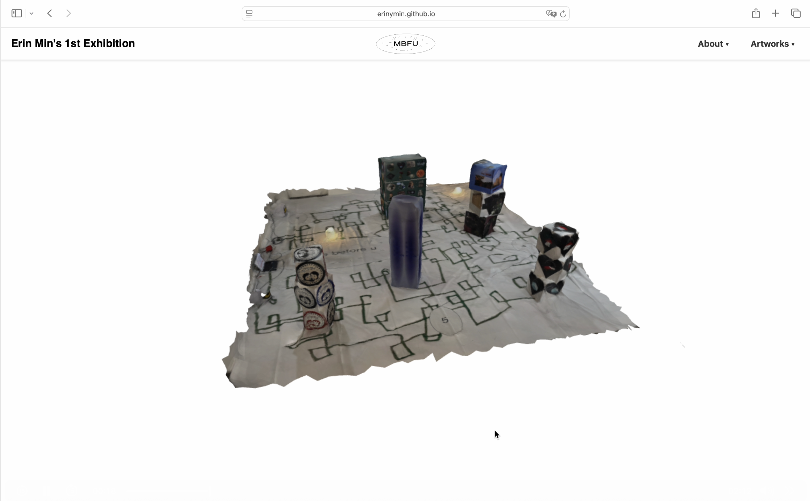
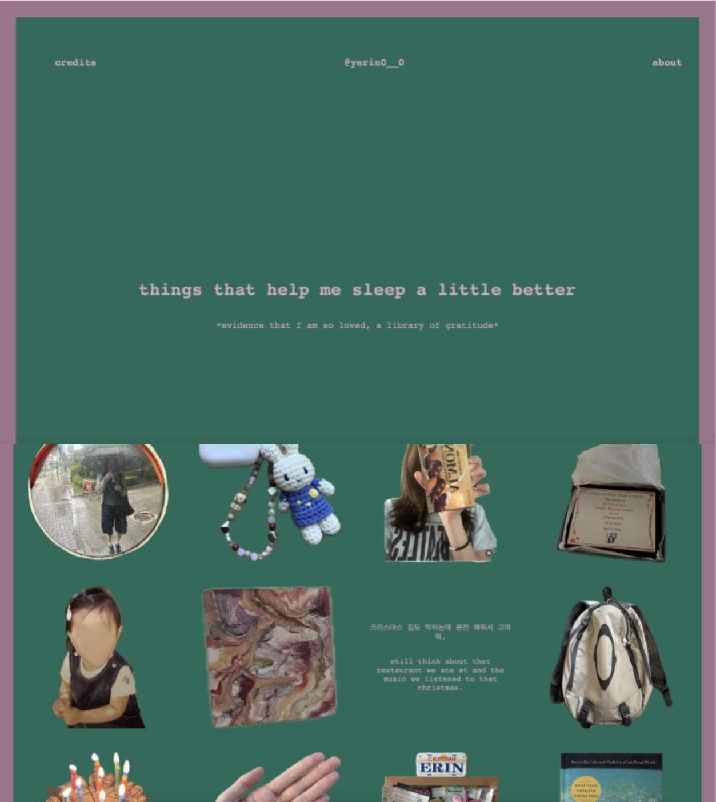
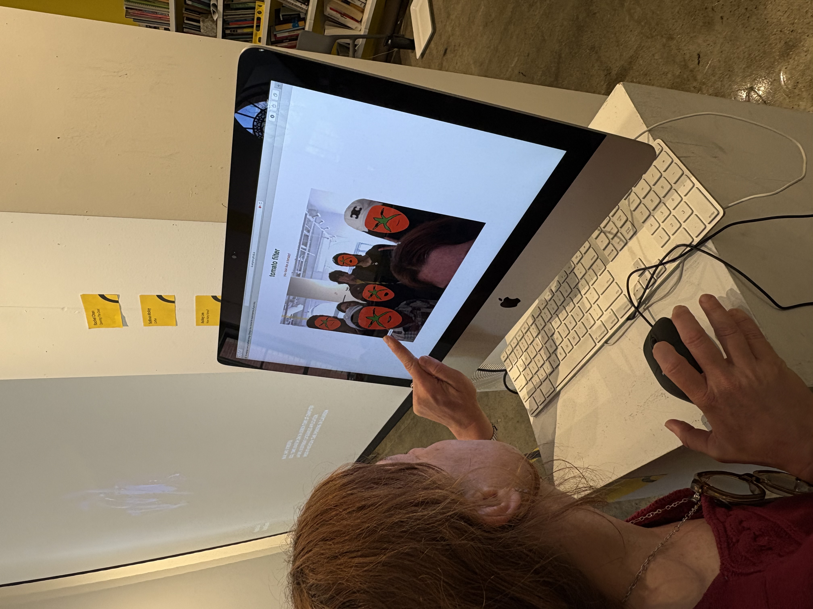
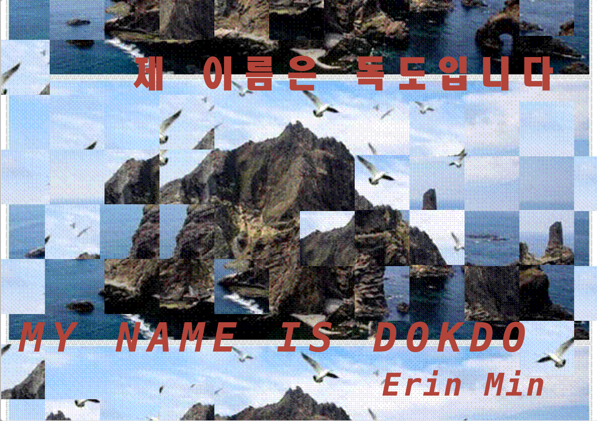

Made with HTML, CSS, and JavaScript
MBFU: The Digital Experience was created for those who could not attend the exhibition in person. The site includes 3D scans of the gallery space, allowing viewers to explore the works and environment as if they were walking through it themselves. By moving through the scans, visitors can see how the artworks interact with the space, the floor installation, and the atmosphere of the room. The digital format extends the exhibition beyond its physical location, making it accessible anywhere while still preserving the sense of immersion and presence.

Made with HTML, CSS, and JavaScript
“Things That Help Me Sleep a Little Better: Library of Gratitude” is an interactive website created for my CTC class. Inspired by the idea that happiness is when there isn’t anything left to think about before going to sleep, the site is a digital library of gratitude—a collection of 100 images from moments in my life.

Made with HTML, CSS, and JavaScript
This playful coding project features an innovative HTML filter AI website that transforms your photos into whimsical tomato-inspired creations. Emphasizing fun and creativity, the site invites users to engage with the technology in a lighthearted way, offering a unique experience that encourages exploration and nicheness. By blending coding skills with a touch of humor, this project showcases the delightful possibilities of web development and AI. The interface is designed to be user-friendly, allowing anyone to turn their camera on and have an interactive experience with the website. This project not only highlights the joy of coding but also serves as a reminder of the playful side of technology and AI, but showing my color as a unique designer.

Made with Adobe Illustrator and Adobe InDesign
"My Name is Dokdo" is a thoughtfully crafted zine designed to educate students and educators about the complex and often controversial history of the island of Dokdo. Through a visually engaging format, this zine breaks down the multifaceted issues surrounding Dokdo into accessible and neutral language, making it easy for readers to grasp the significance of this disputed territory. The artwork and layout invite curiosity while promoting an open dialogue about national identity, historical context, and the importance of understanding differing perspectives. By presenting the information in a digestible manner, "My Name is Dokdo" aims to foster informed discussions and encourage critical thinking about the narratives that shape our understanding of geographical and cultural issues.